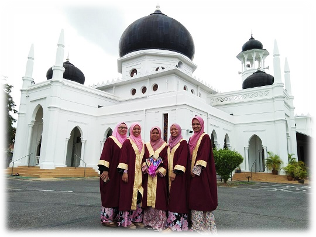
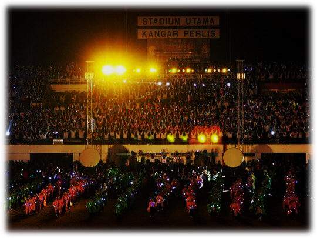
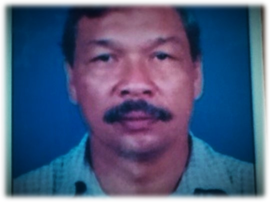
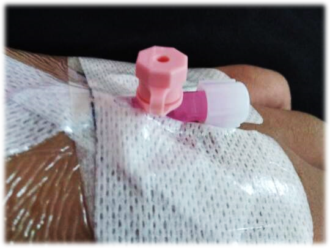

SWEET MEMORIES |
|  |
On graduation day of SMKAP after successfully graduating from high school for 5 years together became one of the unforgettable memories.
An educational institution that shaped me and my friends to become better human beings started in this waqf land.
Baiah solehah in this environment became a new point five years ago but now the end of the secondary school session is not the total end.
On the other hand, my friends and I are happy because on that day a new point of life will begin where we will move to a higher level of education to achieve our dreams.
|
|  |
One of the participants in the “Glow In The Dark Performance” at the
opening ceremony of The Malaysian Schools Sports Council's (MSSM) Track and Field held in Stadium Utama Kangar, Perlis.
It has been recorded by The Malaysian Book of Records with a number of 10,000 bamboo lantern in an event.
The bamboo lantern called as "ka' kung" decorated with a lightstick. All of partcipants need to knock the lantern in synchronise rhythm
to create a wonderful and spiritful sound as a symbolize to athletes' energy.
OPENING CEREMONY 54TH MSSM 2012
|
BAD MEMORIES |
|  |
10 years ago, I lost my one and only father on Friday 7th September 2010. My father was a patient of diabetes mellitus for over years.
He used to serve as a Malaysia Naval Force in his life before pension and started to open his own business.
And until today, it is still the worst nightmare ever but we need to accept the fate and move forward.
|
|  |
In 2019, I got submitted to the hospital because of Cholinergic Angioedema Urticaria and Heat Bumps.
It caused itchy and rash all over my body. Before going to the hospital, I already checked with the Health Unit of UiTM since it occured when I’m at the college.
Then, I visited a dermatologist clinic before deciding to take days off and went back to my hometown. I got a total of 5 injections from this allergic reaction
but luckily I’m not experiencing any systemic symptoms.
|